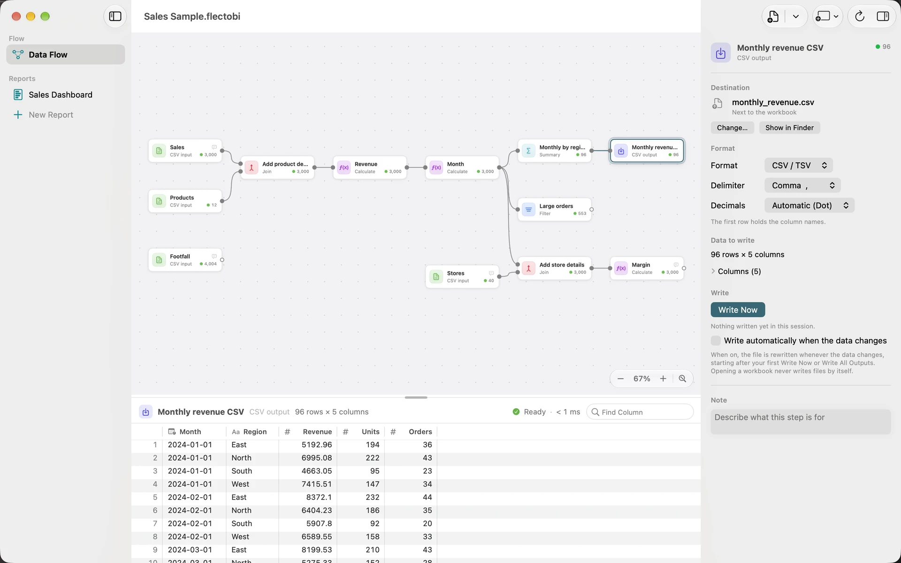

Clean and combine Excel exports
Exports from a system often arrive as one file per month or per branch. They have stray spaces, mixed capitals and empty rows. You then spend an hour in Excel making them match. In FlectoBI you describe the clean-up once as a Flow, and run it again on the next batch.
Goal: turn several Excel exports into one clean Excel file.
What you need: two or more .xlsx files whose sheets have the same Columns. This tutorial uses three monthly files, and a Customer, Status and Amount Column. Swap in your own names.
Add the files
- Open a new Workbook. Choose Flow, then Add Input Files… (Shift-Command-I).
- Select all the files at once and click Add. Each file becomes its own Input.
- FlectoBI reads Excel files in a separate, sandboxed helper. A damaged file cannot crash the app.
Select the first Input. In the inspector, Format is Excel. Check these options:
- Sheet lists the sheets of the file. It starts with the first visible one. Pick another if your data is elsewhere.
- First row has column names should be ticked if your sheet has a header.
- Skip rows skips a title above the header.
- Range reads only some cells, for example A1:F200.
Set the same options for each file. Tick Read every column as text when you need to keep leading zeros, such as in 00417.
Combine the Inputs with Stack
Stack puts Datasets on top of each other, one after the other. It is the right Transform for files with the same Columns.
- Select the first Input, click Add Transform and choose Stack, in the Combine group.
- Drag from the output port of each other Input to the Stack Step. The Step now has one Connection per file.
- In the inspector, Match columns by is set to Name. Columns with the same name line up. A Column missing from one file stays empty for those rows.
The preview shows all rows from all files. Check the row count in the header bar. It should equal the sum of the three files.
If you also have a list of customers in a fourth file, use a Join instead of, or as well as, Stack. A Join matches rows on key Columns and adds the Columns of the second Dataset. See Transforms.

Clean the data
Clean after Stack, not before. One set of Steps then covers every file.
- Add Whitespace after Stack. Tick Trim spaces at the start and end and Collapse repeated spaces into one.
- Add Change Case. Choose the Column Customer and the case Title.
- Add Change Type. Set Amount to decimal. For amounts written as 1.234,56, tick Numbers use a decimal comma. Under Values that cannot be converted, choose Stop with an error if you want to hear about every bad Value, or Become empty to carry on.
- Add Remove Duplicates. Tick the Columns that define a duplicate, such as the invoice number. If you tick none, a duplicate is a row that repeats in every Column. The first row of each group is kept.
- Add Replace Empty to fill empty Status Values with a word such as Unknown.
Select each Step as you add it. The preview shows the effect at once, and the inspector opens with one sentence that says what the Step does.

Filter the rows
Add a Filter. Choose Keep matching and add a condition: Status does not equal Cancelled. Under Match, choose all of these conditions if you add more.

If you prefer to write the test yourself, switch to Formula and enter AND([Amount] > 0, [Status] <> "Cancelled").
Write an Excel Output
- Select the last Step. Choose Flow, then Add Output….
- In the save panel, name the file Clean customers.xlsx and choose a folder. The name must end in .xlsx.
- In the inspector, Format is Excel. The file will hold one sheet named after the Step, with a bold header row.
- Click Write Now. A line reports how many rows were written, with Show in Finder.

FlectoBI never overwrites a source file. If you choose the name of a file that the Flow reads, the inspector refuses with “This output would overwrite … which this flow reads. Choose another file.”
An Excel sheet holds at most 1,048,575 rows. For more, choose CSV or Parquet.
Run it again next month
Replace the three files, or choose Change File… on each Input. Press Command-R to refresh the Inputs, then Shift-Command-R to write all Outputs. The file is written again with the same clean-up applied.
You can also tick Write automatically when the data changes. It starts only after you have used Write Now or Write All Outputs once in this session. Opening a Workbook never writes files by itself.
What you learned
- Several Inputs can join one Flow. See Inputs.
- Stack appends Datasets. Join matches them. Clean-up Steps work on one Dataset at a time. See Transforms.
- An Output writes only when you ask, and never over a source file. See Outputs.
Next: Map revenue by location.